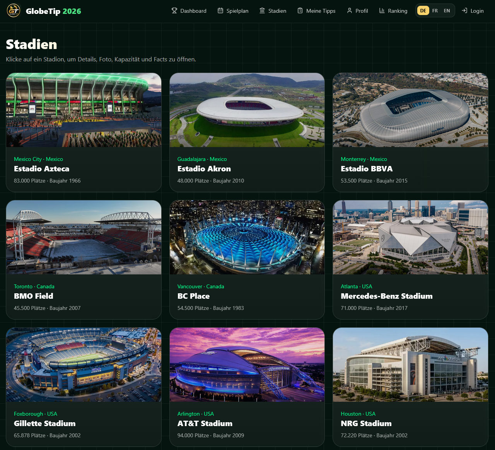
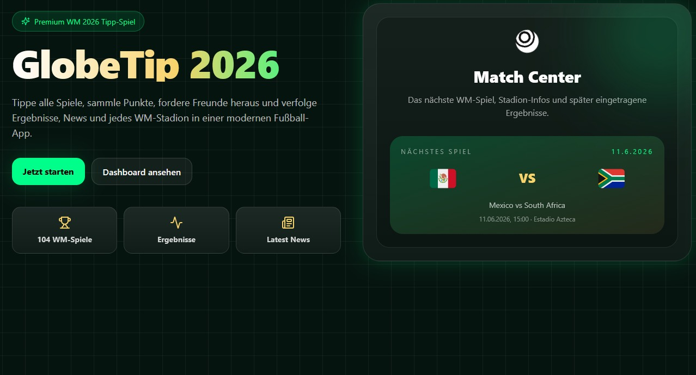
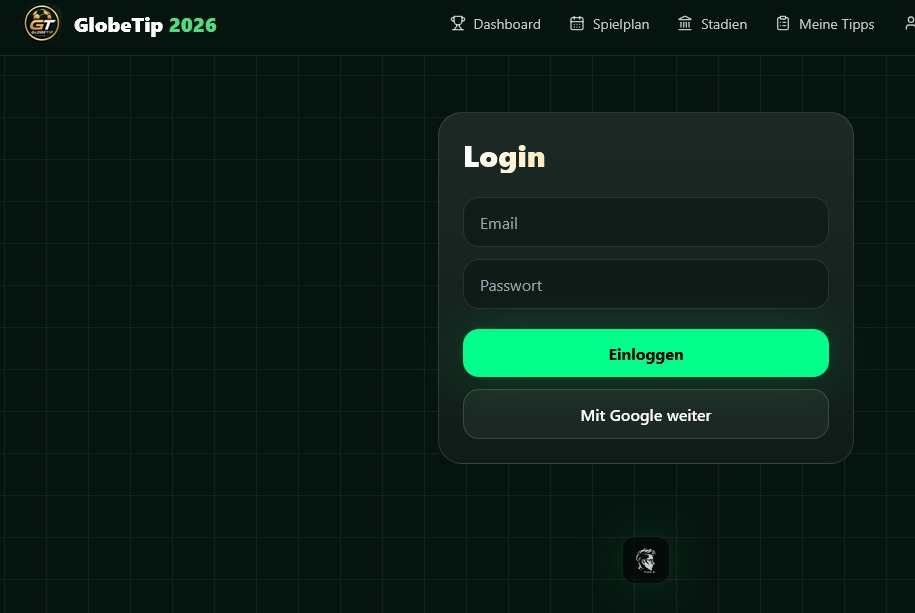
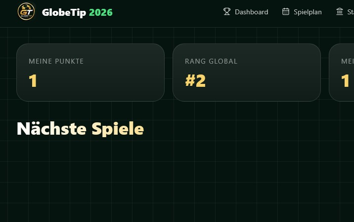
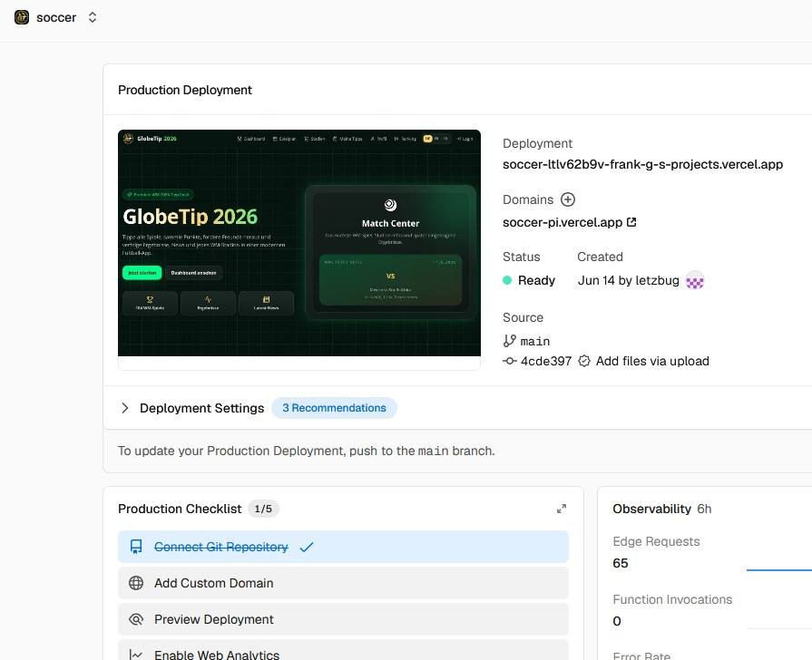
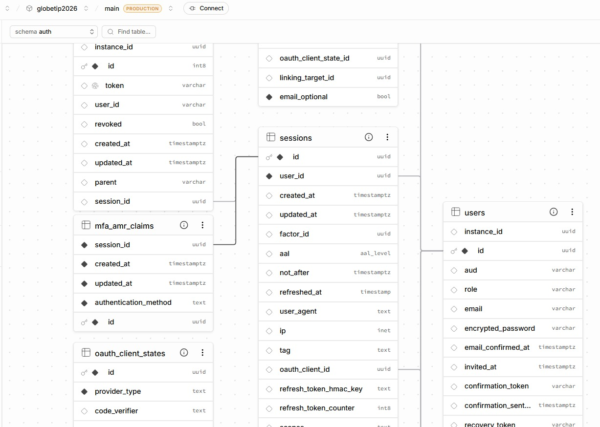

GlobeTip 2026
A full-stack football prediction web app developed as the final examination project of my AI Developer course. The application combines match predictions, user accounts, rankings, match information and a modern responsive interface.
Overview
GlobeTip 2026 is an interactive prediction platform built around the 2026 football World Cup. Users can create an account, browse the tournament schedule, submit match predictions, follow results and compare their score with other players through a ranking system.
The project was created as the final exam for my AI Developer course and was designed to demonstrate the complete workflow of building and deploying a modern web application: concept development, interface design, application logic, authentication, database integration and production deployment.
Project details
Instead of building a simple static demo, I developed the project as a usable full-stack application with several interconnected components. The interface was designed to stay clear and fast even when a large number of matches, teams and user predictions are involved.
User accounts
Authentication allows players to create their own profile and keep their predictions and score connected to their account.
Prediction workflow
Match cards provide a structured way to browse upcoming games and submit predictions before the configured closing time.
Scoring & ranking
Prediction results can be evaluated and translated into points, allowing users to compare their performance through a global ranking.
Match information
The application brings together schedule information, teams, stadium references and result data in one consistent interface.
Responsive UI
The layout was designed to work across desktop, tablet and mobile devices while maintaining the same visual identity and navigation structure.
Production deployment
The application is deployed through Vercel and connected to GitHub, making updates reproducible through the normal source-control and deployment workflow.
Technology
The project uses GitHub for source control, Vercel for production deployment and Supabase for the backend services and database layer. Supabase handles persistent application data and authentication, while the frontend provides the interactive tournament experience.
Media & demo
The screenshots below show the project from development and deployment through to the finished user interface, including the landing page, schedule, login and player dashboard.





